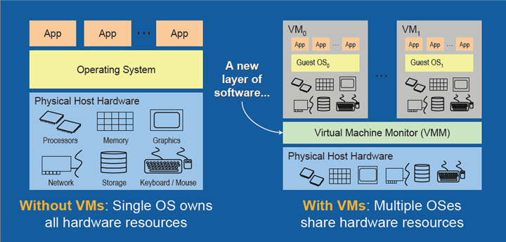

How to set up a private cloud for IaaS
Table of Contents
- 1 Introduction to Virtualization ?
- 2 Introduction to Cloud Computing ?
1 Introduction to Virtualization ?
1.1 What is Virtualization ??
Virtualization is a combination of software and hardware engineering that creates Virtual Machines (VMs) - an abstraction of the computer hardware that allows a single machine to act as if it where many machines.
1.2 What is without Virtualization ??
1.3 How does Virtulization make Life@DataCentres easy ??
1.4 Why Virtualization
- Reduced cost
- Easier backup and disaster recovery
- Efficient IT Operations
- Less Heat
- Easy migrations
- Run multiple difference OS on a single machine
1.5 Lets understand the difference

1.6 Types of Virtualization
1.6.1 On the basis of activity
- Storage Virtualization
- Compute Virtualization
- Network Virtualization
1.6.2 On the basic of type
- Bare metal - type 1 virtualization
- OS level - type 2 virtualization
1.6.3 On the basis of operational way
- VM based virtualization
- Container based Virtualization
1.7 Examples Virtualization technologies
- VM based virtualization
-
Citrix, VM Ware, Oracle Virtual Box
- Container based Virtualization
-
Docker, OpenVZ, LxC
1.8 Problem Solved – No way

2 Introduction to Cloud Computing ?
2.1 What is Computing ??
Computing is the process of manipulation/caculation. 2+2 is computating/computaiton. That's what computers do.
2.2 What is Cloud ??
"The Cloud" or "The Network Cloud" is an IT infrastrucuture sitting somewhere which contains compute resources like servers, storage, network, memory etc.

2.3 What it is not ??

2.4 What is Cloud Computing ??
Cloud computing is the delivery of computing services—servers, storage, databases, networking, software, analytics and more—over the Internet (“the cloud”).
2.5 What without Cloud computing ??
- No Google Drives
- No Dropbox, Instagram,
- Weak IT Operations -
2.6 Advantages of Cloud computing ??
2.7 Three layers of Cloud Computing or three platforms of cloud computing
2.7.1 IaaS - Infrastrucuture as a Service
2.7.2 PaaS - Platform as a Service
2.7.3 SaaS - Software as a Service
2.8 Well known Cloud service provider
- AWS - Amazon Web Services, Digital Ocean, Microsoft Azure, Google Cloud